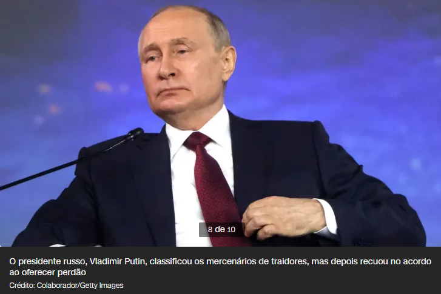
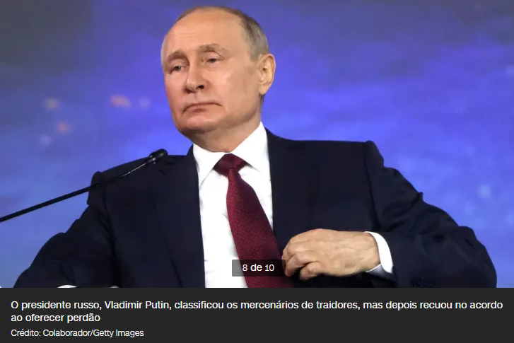
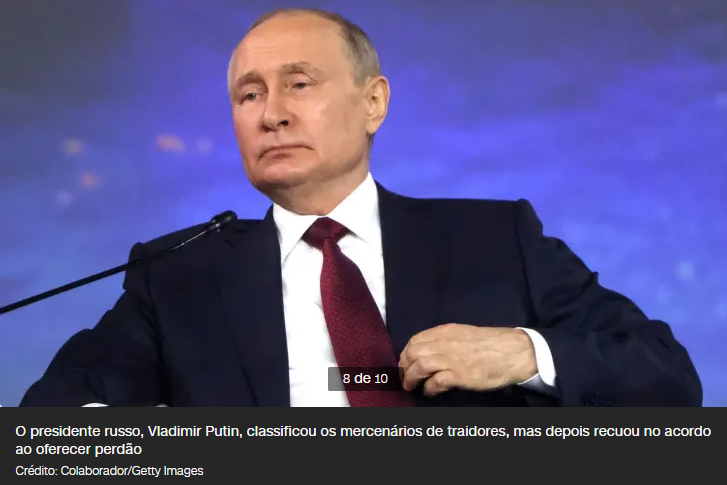

A Agência Federal Russa de Transporte Aéreo confirmou que Yevgeny Prigozhin, chefe do grupo mercenário Wagner, estava a bordo de um avião que caiu enquanto fazia o trajeto entre as cidades de Moscou e São Petersburgo. Segundo a mídia estatal, os 10 ocupantes da aeronave morreram na queda.
A aeronave, fabricada pela brasileira Embraer, estava em voo há cerca de 20 minutos, conforme indicou o site FlightRadar24. Segundo a agência de notícias estatal TASS, estavam a bordo sete passageiros e três tripulantes.
Ainda segundo a Agência Federal Russa de Transporte Aéreo, citando a transportadora que operava o avião que caiu, também estavam a bordo:
Até o momento, oito corpos foram encontrados no local da queda, segundo a agência de notícias Russia-24. A Agência Federal de Transporte Aéreo e o Comitê Investigativo da Rússia declararam que apurações sobre ocaso foram abertas.
“Foi iniciada uma investigação sobre a queda da aeronave Embraer ocorrida esta noite na região de Tver. De acordo com a lista de passageiros, entre eles estão o nome e sobrenome de Yevgeny Prigozhin”, afirmou o departamento.
De acordo com dados de rastreamento de voo do FlightRadar24, o avião, que seria do modelo Embraer Legacy 600, parou de transmitir dados de posição às 18h11, no horário local, provavelmente devido a “interferência/bloqueio na área”, mas o jato continuou a transmitir outros dados por mais nove minutos, até 18h20.
Não está claro o que causou o acidente, e os dados de voo rastreados pelo FlightRadar24 também não oferecem muitas pistas.
Os dados não indicam nehum tipo de descida acentuada antes do avião parar de transmiti-los, embora vídeos divulgados pela imprensa local mostrem um avião em aparende queda livre.
Um canal no Telegram ligado ao grupo militar privado Wagner emitiu um comunicado dizendo que seu fundador Yevgeny Prigozhin morreu no acidente de avião ao norte de Moscou.
O canal já havia veiculado vídeos de propaganda do Grupo Wagner, e o serviço de imprensa oficial de Prigozhin já havia vinculado a ele no passado.
A CNN não conseguiu confirmar a afirmação. Outros canais associados a Prigozhin e Wagner, incluindo seu canal oficial no Telegram, não se manifestaram.
Um canal russo no Telegram bem conhecido, mas não oficial, que esteve próximo das operações do Grupo Wagner também afirmou que Prigozhin morreu.
Prigozhin fundou o Grupo Wagner para ser um grupo mercenário que luta tanto no leste da Ucrânia quanto, cada vez mais, por causas apoiadas pela Rússia em todo o mundo.
A CNN rastreou mercenários na República Centro-Africana, Sudão, Líbia, Moçambique, Ucrânia e Síria. Ao longo dos anos, eles desenvolveram uma reputação particularmente horrível e foram associados a vários abusos dos direitos humanos.
Enquanto muitas tropas regulares russas tiveram contratempos no campo de batalha, os combatentes de Wagner pareciam ser os únicos capazes de fazer progressos tangíveis.
Conhecido por desconsiderar a vida de seus próprios soldados, acredita-se que as táticas brutais e muitas vezes ilegais do grupo Wagner resultaram em inúmeras baixas, já que novos recrutas são enviados para a batalha com pouco treinamento formal.
O processo é descrito pelo tenente-general reformado dos Estados Unidos Mark Hertling como “como alimentar carne para um moedor de carne”.
Prigozhin usou as redes sociais para fazer lobby pelo que deseja e muitas vezes rivalizou com a liderança militar da Rússia, apresentando-se como competente e implacável em contraste com o estabelecimento militar.
Segundo o analista de Internacional da CNN Lourival Sant’Anna, o nome Wagner homenageia em seu nome o compositor favorito do líder do Partido Nazista, Adolf Hitler: Richard Wagner (1813-1883). Um dos fundadores da organização mercenária, Dmitry Utkin, é nazista, com várias tatuagens sobre a ideologia.
Os primeiros registros de atuação ativa do Wagner remetem à crise de 2014 que levou a Rússia a anexar a Crimeia, no leste ucraniano. Desde então, espalharam-se por três continentes, muitas vezes visando países politicamente instáveis.
Muitos dos países onde os mercenários russos atuam possuem grandes reservas de recursos naturais. Segundo apuração da CNN, por exemplo, no Sudão e na República Centro-Africana (RCA), foram concedidos direitos de exploração de minas de ouro e diamantes a empresas ligadas a Prigozhin.
Na Síria, os mercenários do grupo garantiram a segurança campos de petróleo em troca uma porcentagem dos lucros.
Para atuar na linha de frente na guerra da Ucrânia, iniciada em fevereiro de 2022, o grupo Wagner, liderado por Prigozhin, conduziu um recrutamento em massa de prisioneiros russos em troca de alívio ou perdão de suas penas.
A estimativa do Ocidente é de que tenham sido recrutados de 40 mil a 50 mil prisioneiros. O programa de recrutamento foi suspenso, em fevereiro deste ano, sem explicações oficiais.
Em 23 de junho deste ano, Prigozhin acusou abertamente os militares da Rússia de atacar um acampamento do Grupo Wagner e matar uma “grande quantidade” de seus homens.
Ele prometeu retaliar com força, insinuando que suas forças iriam “destruir” qualquer resistência, incluindo bloqueios de estradas e aeronaves. “Somos 25 mil e vamos descobrir por que existe tanto caos no país”, disse ele.
Mais tarde, Prigozhin voltou atrás em sua ameaça, dizendo que sua crítica à liderança militar russa era uma “marcha de justiça” e não um golpe, mas a essa altura ele parece já ter passados dos limites com o Kremlin.

A crise então se aprofundou quando Prigozhin declarou que seus combatentes haviam entrado na região russa de Rostov e ocupado instalações militares importantes em sua capital. A cidade de Rostov-on-Don é a sede do comando militar do sul da Rússia e lar de cerca de 1milhão de pessoas.
Prigozhin divulgou um vídeo dizendo que suas forças bloqueariam Rostov-on-Don, a menos que o ministro da Defesa, Sergei Shoigu, e o principal general da Rússia, Valery Gerasimov, fossem encontrá-lo.
Prigozhin passou meses protestando contra Shoigu e Gerasimov, a quem ele culpa pela vacilante invasão da Ucrânia por Moscou.
Fonte original:
https://www.cnnbrasil.com.br/internacional/prigozhin-queda-aviao-russia/
Publicado por:
Lucas Schroeder